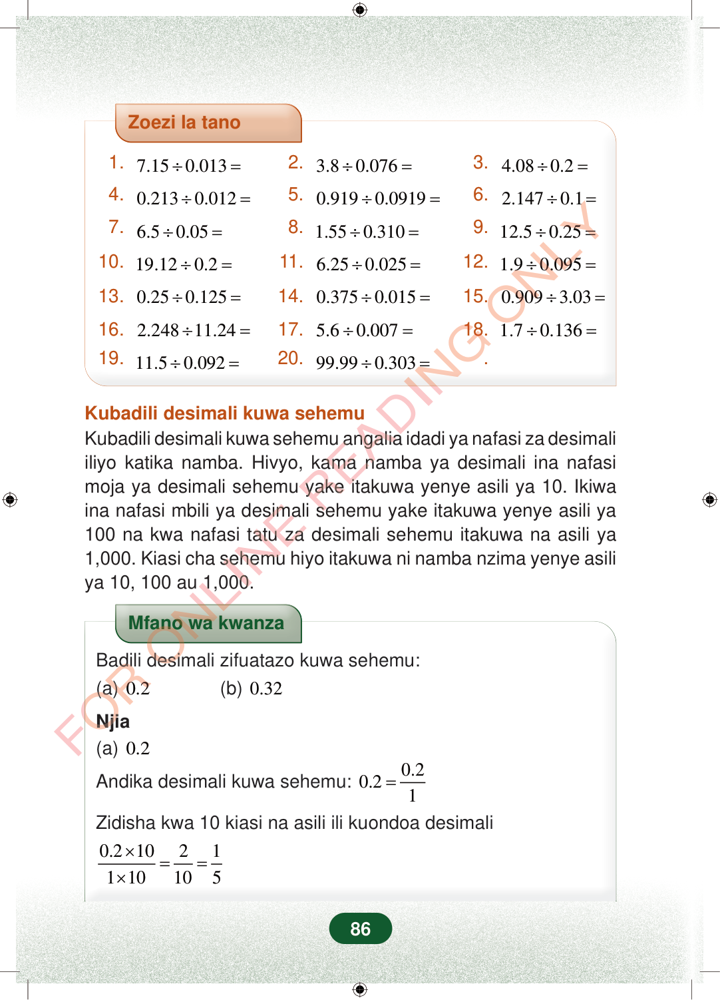

Zoezi la tano1.7.150.013÷=2.3.80.076÷=3.4.080.2÷=4.0.2130.012÷=5.0.9190.0919÷=6.2.1470.1÷=7.6.50.05÷=8.1.550.310÷=9.12.50.25÷=10.19.120.2÷=11.6.250.025÷=12.1.90.095÷=13.0.250.125÷=14.0.3750.015÷=15.0.9093.03÷=16.2.24811.24÷=17.5.60.007÷=18.1.70.136÷=19.11.50.092÷=20.99.990.303÷=.Kubadili desimali kuwa sehemuKubadili desimali kuwa sehemu angalia idadi ya nafasi za desimaliiliyo katika namba. Hivyo, kama namba ya desimali ina nafasimoja ya desimali sehemu yake itakuwa yenye asili ya 10. Ikiwaina nafasi mbili ya desimali sehemu yake itakuwa yenye asili ya100 na kwa nafasi tatu za desimali sehemu itakuwa na asili ya1,000. Kiasi cha sehemu hiyo itakuwa ni namba nzima yenye asiliya 10, 100 au 1,000.Mfano wa kwanzaBadili desimali zifuatazo kuwa sehemu:(a)0.2(b)0.32Njia(a)0.2Andika desimali kuwa sehemu:0.20.21=Zidisha kwa 10 kiasi na asili ili kuondoa desimali0.21021110105×==×86
Zoezi la tano
1. 7.15 0.013 ÷ = 2. 3.8 0.076 ÷ = 3. 4.08 0.2 ÷ =
4. 0.213 0.012 ÷ = 5. 0.919 0.0919 ÷ = 6. 2.147 0.1 ÷ =
7. 6.5 0.05 ÷ = 8. 1.55 0.310 ÷ = 9. 12.5 0.25 ÷ =
10. 19.12 0.2 ÷ = 11. 6.25 0.025 ÷ = 12. 1.9 0.095 ÷ =
13. 0.25 0.125 ÷ = 14. 0.375 0.015 ÷ = 15. 0.909 3.03 ÷ =
16. 2.248 11.24 ÷ = 17. 5.6 0.007 ÷ = 18. 1.7 0.136 ÷ =
19. 11.5 0.092 ÷ = 20. 99.99 0.303 ÷ = .
Kubadili desimali kuwa sehemu Kubadili desimali kuwa sehemu angalia idadi ya nafasi za desimali iliyo katika namba. Hivyo, kama namba ya desimali ina nafasi moja ya desimali sehemu yake itakuwa yenye asili ya 10. Ikiwa ina nafasi mbili ya desimali sehemu yake itakuwa yenye asili ya 100 na kwa nafasi tatu za desimali sehemu itakuwa na asili ya 1,000. Kiasi cha sehemu hiyo itakuwa ni namba nzima yenye asili ya 10, 100 au 1,000.
Mfano wa kwanza
Badili desimali zifuatazo kuwa sehemu: (a) 0.2 (b) 0.32
Njia (a) 0.2
Andika desimali kuwa sehemu: 0.2 0.2 1 =
Zidisha kwa 10 kiasi na asili ili kuondoa desimali
0.2 10 2 1 1 10 10 5 × = = ×
86
Zoezi la tano lenye maswali 20 ya kugawanya namba za desimali, kama 7.15 ÷ 0.013 na 99.99 ÷ 0.303.Zoezi la tano1. 7.15 ÷ 0.013 =2. 3.8 ÷ 0.076 =3. 4.08 ÷ 0.2 =4. 0.213 ÷ 0.012 =5. 0.919 ÷ 0.0919 =6. 2.147 ÷ 0.1 =7. 6.5 ÷ 0.05 =8. 1.55 ÷ 0.310 =9. 12.5 ÷ 0.25 =10. 19.12 ÷ 0.2 =11. 6.25 ÷ 0.025 =12. 1.9 ÷ 0.095 =13. 0.25 ÷ 0.125 =14. 0.375 ÷ 0.015 =15. 0.909 ÷ 3.03 =16. 2.248 ÷ 11.24 =17. 5.6 ÷ 0.007 =18. 1.7 ÷ 0.136 =19. 11.5 ÷ 0.092 =20. 99.99 ÷ 0.303 =Kubadili desimali kuwa sehemuKubadili desimali kuwa sehemu angalia idadi ya nafasi za desimali iliyo katika namba.Hivyo, kama namba ya desimali ina nafasi moja ya desimali sehemu yake itakuwa yenye asili ya 10.Ikiwa ina nafasi mbili ya desimali sehemu yake itakuwa yenye asili ya 100 na kwa nafasi tatu za desimali sehemu itakuwa na asili ya 1,000.Kiasi cha sehemu hiyo itakuwa ni namba nzima yenye asili ya 10, 100 au 1,000.Mfano wa kwanza wa kubadili desimali kuwa sehemu. Unaonyesha 0.2 ikiandikwa kama sehemu na kurahisishwa hadi 1 kwa 5.Mfano wa kwanzaBadili desimali zifuatazo kuwa sehemu:(a) 0.2(b) 0.32Njia(a) 0.2Andika desimali kuwa sehemu:<math><mrow><mn>0.2</mn><mo>=</mo><mfrac><mn>0.2</mn><mn>1</mn></mfrac></mrow></math>Zidisha kwa 10 kiasi na asili ili kuondoa desimali<math><mrow><mfrac><mrow><mn>0.2</mn><mo>×</mo><mn>10</mn></mrow><mrow><mn>1</mn><mo>×</mo><mn>10</mn></mrow></mfrac><mo>=</mo><mfrac><mn>2</mn><mn>10</mn></mfrac><mo>=</mo><mfrac><mn>1</mn><mn>5</mn></mfrac></mrow></math>